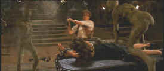

|
Mummy,The1999(SE)/B,A |
|
Universal/1999/125m/ANA
2.35 |
|
Unwrap
the shrouds off your home theater system with the latest incarnation
of Universal’s franchise horror flick, The Mummy. This time
out The Mummy may leave some of it’s soulful edge behind,
but it’s pure fun and mostly successful. A few missteps may keep The
Mummy from immortalizing itself in the annals of special effects
extravaganzas, but the energy never feels centuries old. The
Mummy is not good enough to say you’ll either love it or hate
it. The special effects vary from frightening to laughable, but they
are consistently well done.
 |
|
Fraser takes
on the forces of evil.©Universal |
For
the uninitiated, the mummy in question was buried alive many
Pharaohs ago for making whoopee with the Pharaoh’s lady.
You know the old saying about not fooling around where you
work. Imhotep, High Priest of Egypt, made the mistake in spades and
wound up buried alive. Fortunately, old Egyptian curses seem to
provide for resurrection.
Jump
forward in time to twentieth century Egypt and librarian Evelyn’s
accidental discovery of a map to the legendary city of Hamunaptra. The bungling pretty lady is led by her brother to an
adventurer in jail about to be hung for some questionable infraction
of the local law. It’s desperation at first site. The lady manages
his release after a failed hanging. Thank God for strong necks. When
the group of fortune hunters stumbles onto the tomb of Imhotep, The
Mummy rises up in search of his
lost lady with a fury unseen in the annals of Mummy flicks.
And so the search for the
great Pharaoh’s treasure begins.
Brendan Fraser goes action hero as Rick
O'Connell a soldier of fortune after the loot of Hamunaptra and the
lady librarian. Fraser proves himself a worthy action hero mining
the most of his burly physique and easy charm. It’s a winning combination for The Mummy. Rachel Weisz plays
the femme fatale with rather less camera chemistry than her male
co-star. John Hannah, recently opposite Gwyneth Paltrow as the
romantic lead in Sliding Doors, adds a touch of callow silliness as
Evelyn’s reprobate brother.
The Mummy would have been a
better picture if it took itself more seriously yet maintained its
cavalier spirit. Some of the humor is unfortunate, especially the
portrait of sniveling Beni, O'Connell's nemesis and evil's
accomplice. The special effects are more suited to a dark Arabian
Nights than to an adventure yarn, but they still look great. Films
that poke fun at a genre and still want to preserve some of the
genre's freshness often find themselves on a foundation of sand.
That The Mummy avoids sinking under the weight of it's own
shrouds is a tribute to the energy of the filmmakers.
The
Mummy casts a DVD spell with razor sharp images, dynamic picture
presentation, sparkling color and a Dolby Digital 5:1 surround track
good enough to shake the dust off the walls in your home theater.
Lots of extras are provided on this outstanding special edition. The
second audio commentary from director Stephen Sommers and Editor Bob
Ducsay is honest and illuminating. Add
a short about the visual effects work and some entertaining deleted
scenes and The Mummy DVD package stands the test of
Pharaoh’s past: it’s worth preserving as an example of the best
in today’s DVD presentation and technology.
|
|
|
Check
out the Movie
Poster Archive for short bios and images of
Susan Hayward, Kirk Douglas, Katharine Hepburn and many more. The Feature
Archive has articles ranging from Akira
Kurosawa to Blonde
Bimbos and John
Ford.

Click on the image of The
Heistmasters for an interesting feature on the tough
guys that pull off the big jobs. |
|
HOT
LINKS
etown.com
Venerable Internet
Magazine etown.com is making a big growth spurt adding veteran home
theater writers to their editorial and review staff. Look for many
new hardware reviews in the coming weeks.
Classic
Movies
Brad Lang movie site
continues to be a great tool for Internet surfers and movie lovers.
As usual, he's found some interesting links. Check out the link for
a fine Japanese site on Kurosawa films.
|
|
Home Theater Reference Reviewing System

When you read a DVD
review it's of utmost importance to know what equipment is being
used to evaluate quality. Click on the projectors to find out more. |
| |
|